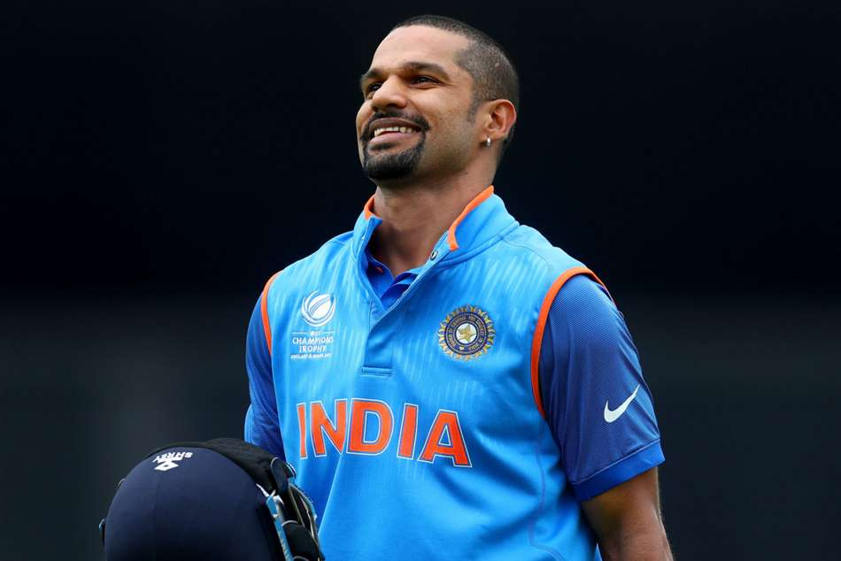
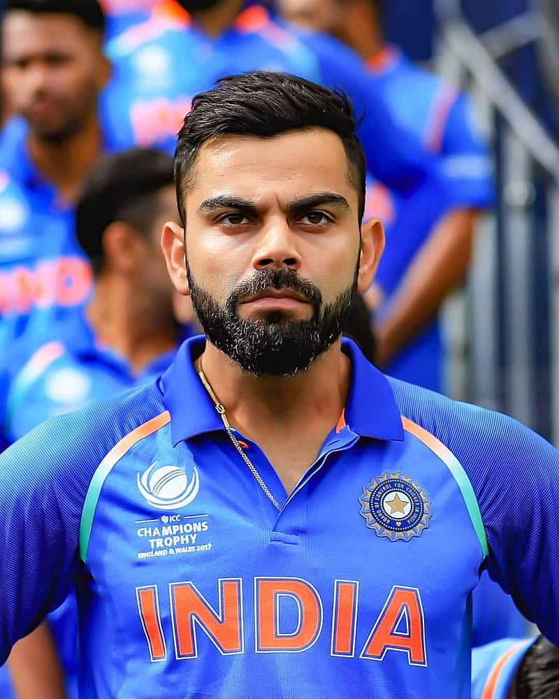
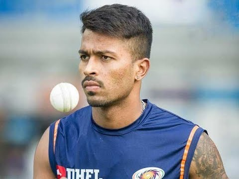
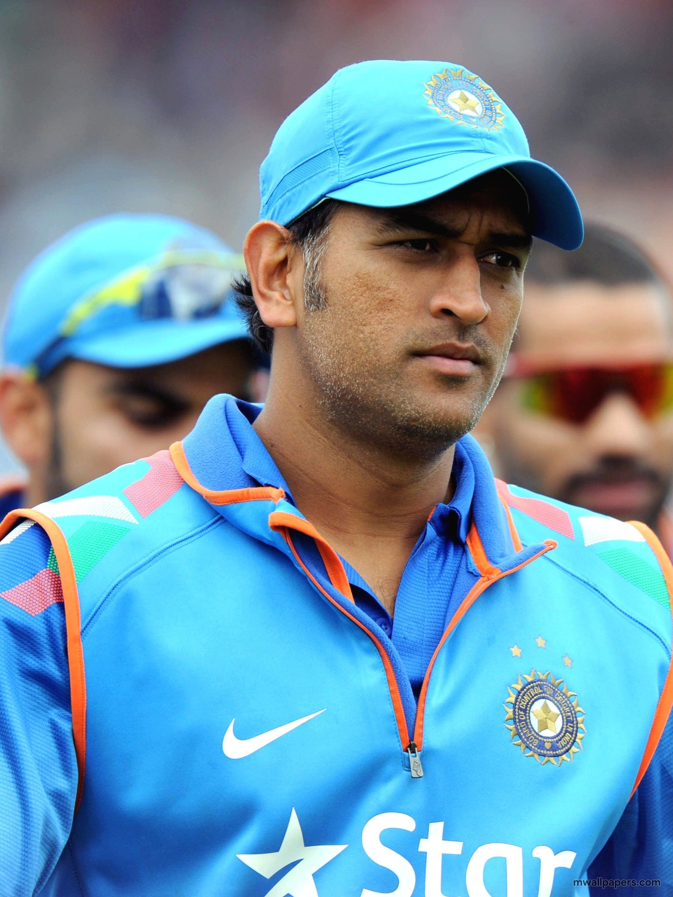
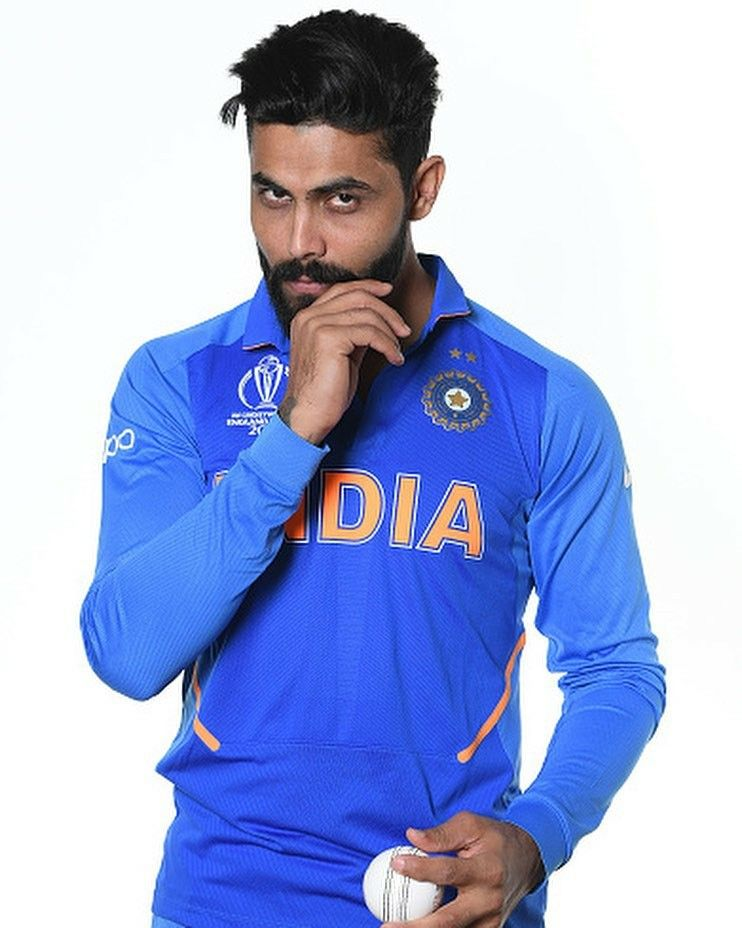
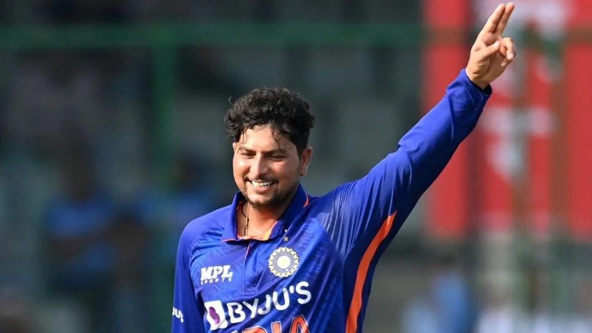
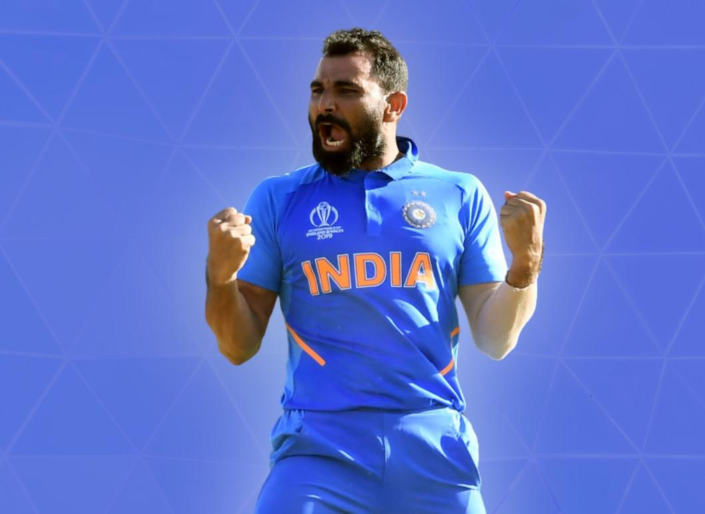
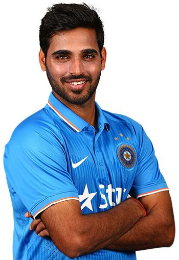
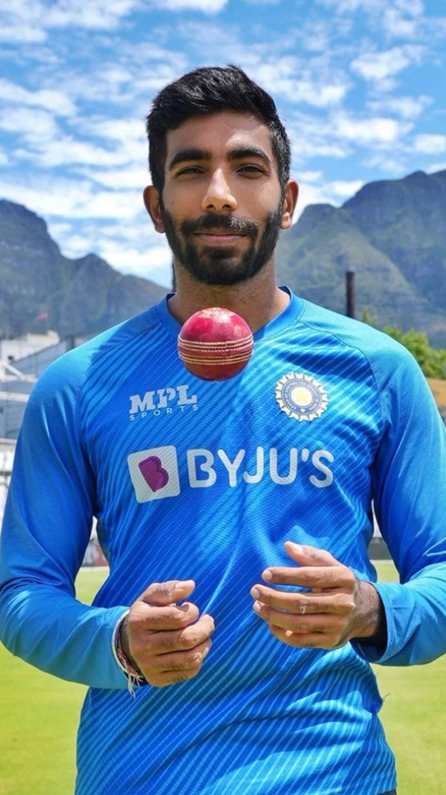
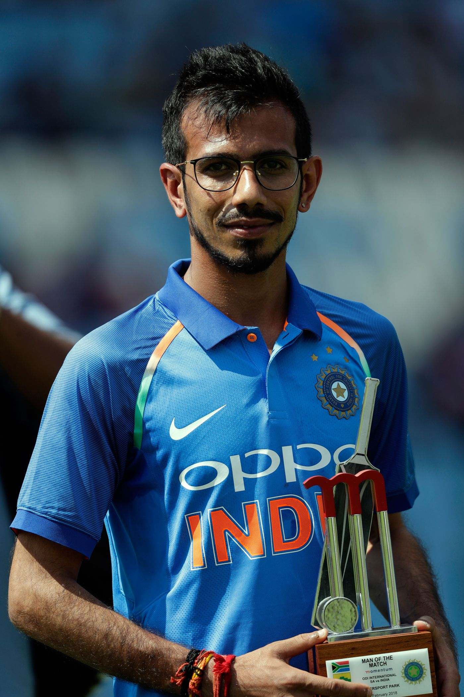

MY PLAYING 11
[1] Rohit Sharma

Rohit Gurunath Sharma (born 30 April 1987) is an Indian international cricketer and the current captain of the Indian cricket team.
Considered as one of the best opening batters of all time,[2] Rohit is known for his timing, elegance, six-hiting abilities and leadership.
He plays as a right-handed batsman for India national cricket team in international cricket, Mumbai Indians in IPL and for Mumbai in domestic cricket.
Rohit also captains Mumbai Indians and the team has won 5 titles under his leadership, the most by any team.
For more info click here
Rohit Sharma
[2] Shikhar Dhawan

Shikhar Dhawan (born 5 December 1985) is an Indian cricketer.
Being a left-handed opening batsman and occasional captain of the India national cricket team,
he captains Punjab Kings in the Indian Premier League and plays for Delhi in first-class cricket.
At the 2013 Champions Trophy, 2015 World Cup, and 2017 Champions Trophy, Dhawan was the leading run-scorer for India.
He also became the first player in the history of IPL to score two back-to-back centuries.
For more info click here
Shikhar dhawan
[3] Virat Kohli

Virat Kohli born 5 November 1988) is an Indian international cricketer and former captain of the Indian national team.
He is widely regarded as one of the greatest batsmen of all time in international cricket.
Kohli plays as a right-handed batsman for Royal Challengers Bangalore in the IPL and for Delhi in Indian domestic cricket.
He holds the record for scoring most runs in both T20 internationals and in IPL. In 2020,
the International Cricket Council named him as player of decade.
For more info click here
Virat Kohli
[4] Hardik Pandya

Hardik Himanshu Pandya (born 11 October 1993) is an Indian international cricketer.
An All-rounder who bats right-handed and bowls right-arm fast-medium,
Pandya has played in all 3 formats for India.
He also plays for Baroda cricket team in domestic cricket and captains the newly debuted franchise Gujarat Titans in the Indian Premier League (IPL)
and led them to their maiden IPL title in the 2022 edition.
His elder brother Krunal Pandya is also a cricketer.
For more info click here
Hardik Pandya
[5] M.S.Dhoni

Mahendra Singh Dhoni born 7 July 1981), commonly known as MS Dhoni, is a former Indian cricketer and captain of the Indian national team
in limited-overs formats from 2007 to 2017, and in Test cricket from 2008 to 2014. He is also the current captain of Chennai Super Kings in the Indian Premier League.
Under his captaincy, India won the 2007 ICC World Twenty20, the 2011 Cricket World Cup,
and the 2013 ICC Champions Trophy, the most by any captain.
He also led India to victory in the 2010 and 2016 Asia Cup. Additionally, under his leadership,
India won the 2010 and 2011 ICC Test Mace.
For more info click here
M S Dhoni
[6] Ravindra Jadeja

Ravindrasinh Anirudhsinh Jadeja (born 6 December 1988), commonly known as Ravindra Jadeja,
is an Indian international cricketer. He is an all-rounder, who bats left-handed and bowls left-arm orthodox spin.
He was the captain of the Chennai Super Kings in the Indian Premier League.He represents Saurashtra in first-class cricket.
He is considered as one of the best fielders in the current decade.
For more info click here
Ravindra Jadeja
[7] Kuldeep Yadav

Kuldeep Yadav (born 14 December 1994) is an Indian international cricketer.
He is a bowling all-rounder who bowls Left-arm Unorthodox spin bowler is and a capable Lower order batter who plays for
India and for Uttar Pradesh in domestic cricket. He was signed by the Delhi Capitals for the Indian premiere league.
He has played for the Indian Under-19 cricket team and played in the 2014 Under-19 Cricket World Cup.
On 18 December 2019, against the West Indies, he became the first bowler for India to take two hat-tricks in international cricket.
For more info click here
Kuldeep Yadav
[8] Mohammed Shami

Mohammed Shami Ahmed(born 3 September 1990) is an Indian international cricketer who plays for the Indian national cricket
team in all formats of the game as a right-arm fast bowler.
He plays domestically for Bengal and in the Indian Premier League for Gujarat Titans.He is a right-arm fast bowler,
who bowls the ball off the seam and using swing, including reverse swing, to move the ball both ways.
He has been described as a fine bowler at the end of a limited-overs innings and as "unplayable" at times in all formats.
For more info click here
Mohammed Shami
[9] Bhuvnesgwar Kumar

Bhuvneshwar Kumar Singh (born 5 February 1990) is an Indian international cricketer who is playing for the Indian cricket team.
He currently plays for Sunrisers Hyderabad in the Indian Premier League and Uttar Pradesh in domestic cricket.
He is considered to be one of the best and most consistent swing bowlers in the world.Kumar swings the ball both ways efficiently,
with his inswingers more effective than outswing.
Initially starting his career as an opening swing bowler,
Bhuvneshwar kumar upgraded his bowling armoury with reverse swing, slower bowls and Yorkers to become a death over specialist too.
For more info click here
Bhuvneshwar Kumar
[10] Jasprit Bumrah

Jasprit Jasbirsingh Bumrah (born 6 December 1993) is an Indian international cricketer who plays for the Indian national cricket team in all formats of the game.
In the India's domestic cricket, he plays for Gujarat cricket team and Mumbai Indians in first-class cricket and Indian Premier League respectively.
He is a right-arm fast bowler.
He is considered one of the best fast bowlers in the world, known for his unique action and ability to generate late swing and seam movement.
For more info click here
Jasprit Bumrah
[11] Yuzvendra Chahal

Yuzvendra Chahal (born 23 July 1990) is an Indian international cricketer who plays for the Indian cricket team in white ball cricket as a leg spin bowler.
He plays for Haryana in domestic cricket and Rajasthan Royals in the Indian Premier League.He is a Right-arm leg break bowler.
Chahal was the second player and first Indian to take a 6 wicket haul in T20I history.
He was the first concussion substitute to be named man of the match in an international cricket match.
He is a former chess player and represented India internationally in chess.
For more info click here
Yuzvendra Chahal